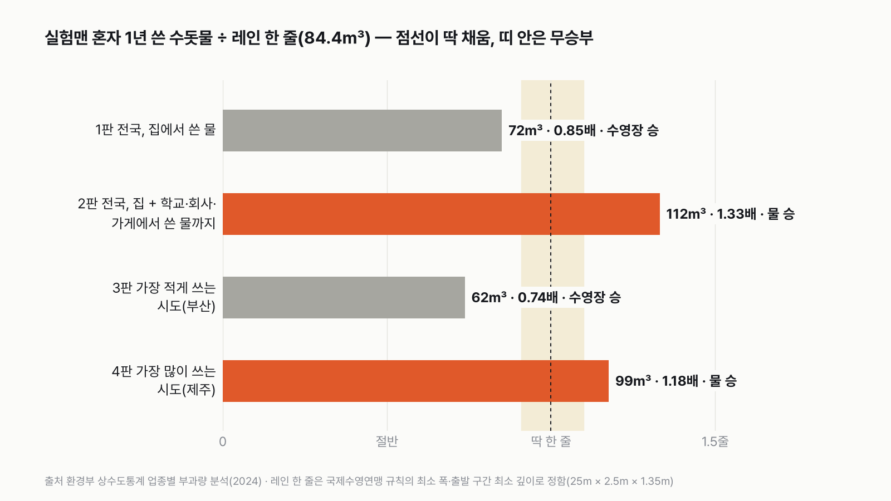
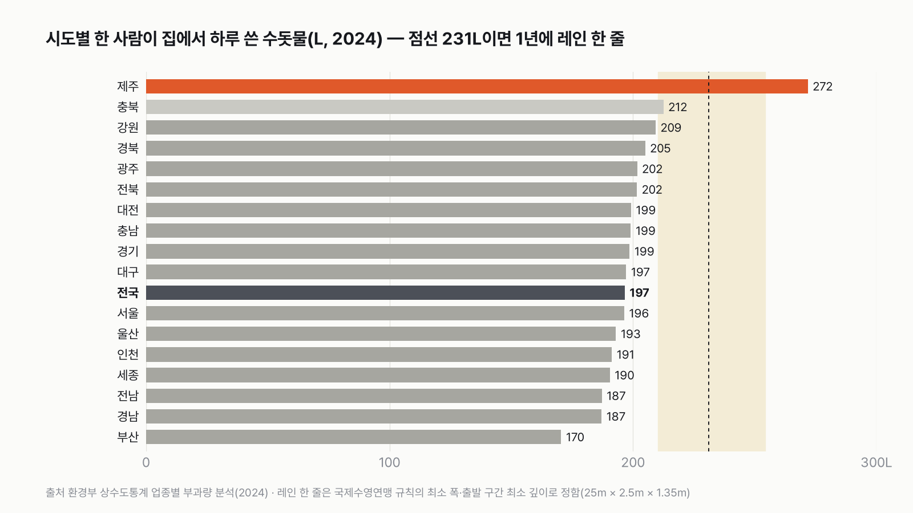
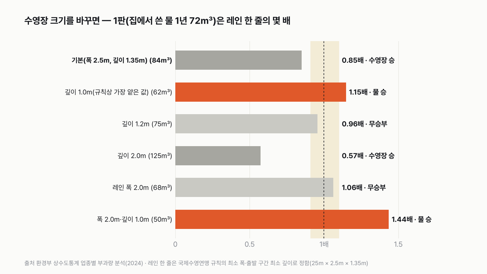

실험맨 혼자 1년 쓴 수돗물로 25m 수영장 레인 한 줄을 채울 수 있을까
세수하고, 샤워하고, 변기 물을 내릴 때마다 쓰는 물이 1년이면 어디까지 차오를까요? 내 하루 물이 수영장 한 줄과 견줘 얼마나 되는지 환경부 상수도 통계로 재 봐요.

독자 투표
3줄 요약
- 평균 한국인 실험맨이 1년 동안 쓴 수돗물과, 25m 수영장 레인 한 줄에 드는 물을 견줘요.
- 레인 한 줄은 국제수영연맹 규칙의 최소 레인 폭(2.5m)과 출발 구간 최소 깊이(1.35m)로 정해 두었어요. 1년 물이 레인 한 줄의 1.1배 이상이면 '채운다', 약 91% 이하면 '못 채운다', 그 사이는 비김이에요.
- 전국에서 집에서 쓴 물, 학교·회사·가게에서 쓴 물까지 더한 값, 가장 적게 쓰는 시도, 가장 많이 쓰는 시도로 네 판을 겨뤄요.
조건과 규칙
- 실험맨의 물은 환경부 「상수도 통계」(2024년)의 '1인1일 가정용수 사용량'이에요. 수도 요금이 매겨진 물을 사람 수로 나눈 값이라, 아기부터 어르신까지 모두 넣은 평균이에요. 1년 물 = 하루 사용량 × 365일이에요.
- 레인 한 줄은 국제수영연맹(지금의 World Aquatics) 시설 규칙에 맞췄어요. 레인 폭은 최소 2.5m, 출발대가 있는 쪽 깊이는 최소 1.35m예요. 길이 25m, 폭 2.5m, 깊이 1.35m로 고르게 보면 84.4m³(8만 4,375L)예요.
- 생수, 지하수, 음식에 든 물은 넣지 않아요. 수돗물만 세요.
- 1년 물 ÷ 레인 한 줄 부피가 1.1 이상이면 '채운다(물 승)', 1 ÷ 1.1(0.909) 이하면 '못 채운다(수영장 승)', 그 사이는 비김이에요.
- 네 판 가운데 더 많이 이긴 쪽이 최종 승자예요. 승수가 같으면 비김이에요.
결과 요약
물 2승, 수영장 2승 → 최종 무승부
- 전국 평균 실험맨은 집에서 하루 196.6L를 써요. 1년이면 71.8m³, 레인 한 줄의 0.85배라 못 채워요. 수영장 승이에요.
- 학교·회사·가게에서 쓴 물까지 1인당으로 더하면 하루 307.7L예요. 1년 112.3m³, 1.33배라 채우고도 남아요. 물 승이에요.
- 집에서 가장 적게 쓰는 부산은 하루 170.5L, 1년 62.2m³로 0.74배예요. 수영장 승이에요.
- 가장 많이 쓰는 제주는 하루 271.8L, 1년 99.2m³로 1.18배예요. 물 승이에요.
그래서? 집에서 쓴 물만으로 레인 한 줄을 딱 채우려면 하루 231L가 필요해요. 전국 평균 실험맨은 그보다 하루 35L 모자라요. 2L 생수병 17개 정도예요.
계산 전 어림으로도 '집에서 쓴 물'은 조금 모자라고, 학교·회사에서 쓴 물까지 더하면 넘칠 거라고 봤어요. 승부를 가른 건 시도 두 판이었어요.
독자 예상 vs 데이터 결과
실험맨 혼자 1년 쓴 수돗물로 25m 수영장 레인 한 줄을 채울 수 있을까?
데이터 결과: 무승부. 레인 한 줄은 84.4m³(25m × 2.5m × 1.35m)예요. 전국 집에서 쓴 물 1년 71.8m³(0.85배)와 부산 62.2m³(0.74배)는 못 채우고, 학교·회사·가게에서 쓴 물까지 더한 112.3m³(1.33배)와 제주 99.2m³(1.18배)는 채워요. 2승 2패라 비겼어요.


1판 전국 집에서 쓴 물: 수영장 승(0.85배)
2024년 한 사람이 집에서 하루 쓴 수돗물은 196.6L예요. 2L 생수병 98병이에요. 1년이면 71.8m³로, 레인 한 줄(84.4m³)의 85%까지 차올라요. 남은 15%, 12.6m³를 더 채우려면 두 달 넘게(64일) 더 써야 해요. 레인 한 줄을 다 채우는 데는 429일, 1년 2개월이 걸려요.
2판 학교·회사·가게·공장에서 쓴 물까지 1인당 나누면: 물 승(1.33배)
수돗물은 집에서만 쓰지 않아요. 학교, 사무실, 식당, 목욕탕, 공장에서도 써요. 같은 통계표의 '1인1일 비가정용수 사용량'은 하루 111.1L예요. 집에서 쓴 물과 더하면 하루 307.7L, 1년 112.3m³예요. 레인 한 줄을 채우고도 3분의 1이 남아요. 이렇게 세면 274일, 9개월이면 한 줄이 차요.
3판 부산: 수영장 승(0.74배)
17개 시도 가운데 집에서 물을 가장 적게 쓴 곳은 부산이에요. 하루 170.5L, 1년 62.2m³예요. 레인 한 줄의 4분의 3에 못 미쳐요. 한 줄을 채우려면 495일, 1년 4개월이 걸려요.
4판 제주: 물 승(1.18배)
가장 많이 쓴 곳은 제주예요. 하루 271.8L로 전국 평균보다 75L 많아요. 1년 99.2m³라 레인 한 줄을 채우고 15m³가 남아요. 17개 시도 가운데 집에서 쓴 물만으로 '채운다' 판정이 나는 곳은 제주 하나뿐이에요. 이 표만으로는 제주가 왜 많이 쓰는지 알 수 없어요.


나머지 시도는 거의 다 못 채워요
충북(212.5L)은 0.92배로 비김 구간(레인의 0.91~1.1배) 안에 들어요. 강원(209.3L)은 0.905배로 비김 구간에 0.004 모자라 '못 채운다'예요. 부산을 포함한 나머지 14개 시도는 모두 0.74~0.89배 사이에서 '못 채운다'예요. 서울(196.4L)은 전국 평균과 거의 같아요.
하루 231L가 갈림길이에요
레인 한 줄(84.4m³)을 1년에 딱 채우는 하루 사용량은 231.2L예요. 하루 254.3L 넘게 쓰면 '채운다', 210.1L 이하면 '못 채운다', 그 사이는 비김이에요. 전국 평균 196.6L는 '못 채운다' 선보다 13.5L 아래예요. 비기려고만 해도 하루 13.5L, 2L 생수병 7개를 더 써야 해요.
10년 동안 조금씩 늘었어요
같은 표에서 전국 1인1일 가정용 사용량은 2014년 178.4L에서 2024년 196.6L로 18.2L(10%) 늘었어요. 가장 많았던 해는 2021년(199.9L)이에요. 2019년 189.0L에서 2020년 196.4L로 한 해에 7.4L 늘었고, 그 뒤로는 195~200L 사이를 오가요. 그래도 10년 내내 레인 한 줄의 77~87% 사이라, 어느 해에도 비김 구간까지 오르지 못했어요.
수영장이 얕으면 결과가 바뀌어요
레인 부피는 가정이라, 크기를 바꿔 다시 쟀어요. 깊이를 규칙상 가장 얕은 값인 1.0m로 잡으면 레인 한 줄은 62.5m³라 1판도 1.15배로 '채운다'예요. 깊이 1.2m로 얕으면 1판은 0.96배로 비기고, 2.0m로 깊게 잡으면 0.57배로 '못 채운다'예요. 1판을 기준으로 깊이 1.04m 이하면 물이 이기고, 1.26m보다 깊으면 수영장이 이겨요. 레인 폭을 2.0m로 좁히면 1.06배로 비겨요.


수영장 전체를 채우려면 10년
레인 8개짜리 수영장 전체는 폭 20.4m(레인 8개 + 양 끝 여유 0.2m씩)라 688.5m³예요. 실험맨이 집에서 쓰는 물로만 채우면 9.6년이 걸려요. 학교·회사·가게에서 쓴 물까지 더해도 6.1년이에요. 혼자서는 어림없지만, 10명이 모이면 1년 안에 채워요.
정수장에서 나온 물로 세면 더 많아요
행정안전부 지방공기업 결산의 '1인1일 평균 급수량'은 2024년 382.3L예요. 정수장에서 만들어 내보낸 물 전체를 급수 인구로 나눈 값이라, 수도관에서 새는 물과 요금을 매기지 않은 물까지 들어 있어요. 이 값이면 1년 139.5m³로 레인 한 줄의 1.65배예요. 다만 이 값은 다른 통계표라 판정에는 쓰지 않고 견주어 보기만 했어요.
비가정용은 시도마다 크게 달라요
1인당 비가정용(학교·회사·가게·공장 등) 사용량은 세종이 하루 73.0L로 가장 적고, 충북이 233.3L로 가장 많아요. 충북은 17개 시도 가운데 비가정용이 가정용(212.5L)보다 많은 유일한 곳이에요. 2판을 시도별로 했다면 결과가 지역마다 달랐겠지만, 2판은 전국 값 하나로 정해 두었어요.
수영장 레인 한 줄은 생각보다 큰 물그릇이에요. 실험맨이 1년 내내 씻고, 마시고, 빨래하고, 변기 물을 내려도 집에서 쓴 물로는 85%까지만 차요. 그런데 내가 다니는 학교와 회사, 들르는 식당에서 쓰는 물까지 더하면 한 줄을 넘쳐요. 오늘 샤워기를 틀 때, 내 1년 물이 수영장 한 줄 앞에서 멈춘다는 걸 한 번 떠올려 보세요.
이 숫자는 어디서 왔나요
출처
기준일 물 사용량은 2024년 값이에요. KOSIS 값은 2026년 11월 10일에 받았어요. 조건은 2026년 11월 10일, 물 사용량 값을 받기 전에 정했어요.
환경부상수도 통계
- 업종별 부과량 분석KOSIS DT_106N_06_0100045
1인1일 가정용·비가정용 사용량, 시도별, 2014~2024
행정안전부지방공기업 결산
- 상수도 사업운영현황KOSIS DT_110020_A006
1인1일 평균 급수량(대조용), 2021~2024
국제수영연맹(지금의 World Aquatics)
- FINA Facilities Rules 2017–2021 (깊이·레인 폭 조항)
레인 폭 2.5m·깊이 1.35m 가정의 근거
어떻게 셌나요
- 1년 물: 환경부 「상수도 통계」 업종별 부과량 분석의 '1인1일가정 용수사용량'(L/인/일)과 '1인1일비가정용수사용량'(L/인/일), 2024년 값이에요. 1년 물(m³) = 하루 사용량(L) × 365 ÷ 1,000이에요.
- 레인 한 줄: 25m × 2.5m × 1.35m = 84.375m³이에요. 실제 수영장은 바닥이 기울어 있어 곳곳의 깊이가 달라요. 여기서는 출발 구간의 최소 깊이 1.35m가 바닥 전체에 고르게 있다고 봤어요.
- 판정: 1년 물 ÷ 84.375가 1.1 이상이면 물 승, 0.909 이하면 수영장 승, 그 사이는 비김이에요.
- 대조: 같은 표의 가정용 부과량(2024년 37억 710만m³)을 1인1일 가정용 사용량으로 거꾸로 나누면 약 5,166만 명이 나와요. 우리나라 인구 규모와 비슷해서, 1인당 값이 전체 인구로 나눈 평균이라는 것과 맞아요.
| 항목 | 값 | 잰 것 / 가정 |
|---|---|---|
| 전국 1인1일 가정용 사용량(2024) | 196.6L | 잰 것(요금 부과량 기준) |
| 전국 1인1일 비가정용 사용량(2024) | 111.1L | 잰 것(요금 부과량 기준) |
| 가장 적은 시도 · 가장 많은 시도(2024, 가정용) | 부산 170.5L · 제주 271.8L | 잰 것 |
| 1인1일 평균 급수량(2024, 행안부, 대조용) | 382.3L | 잰 것(정수장 생산량 기준) |
| 레인 한 줄 크기 | 25m × 2.5m × 1.35m = 84.4m³ | 가정(국제수영연맹 시설 규칙 최소 폭·출발 구간 최소 깊이) |
| 수영장 전체 크기 | 8레인, 폭 20.4m, 688.5m³ | 가정 |
| 1년 = 365일 | 하루 평균 × 365 | 가정 |
한계 5가지
이 데이터로 말할 수 없는 것
- 1인1일 사용량은 요금이 매겨진 물을 사람 수로 나눈 평균이에요. 혼자 사는 사람과 4인 가족의 한 사람이 쓰는 물은 다를 수 있어요.
- 가정용에는 집 안에서 쓴 물이 모두 들어 있어요. 집에서 하는 작은 가게처럼 용도가 섞인 곳은 지자체마다 나누는 방식이 다를 수 있어요.
- 비가정용을 1인당으로 나눈 2판은 실험맨이 직접 쓴 물이 아니라, 나라 전체 학교·회사·가게·공장의 물을 사람 수로 똑같이 나눈 값이에요.
- 수영장 규격은 국제수영연맹 규칙의 2017~2021년판 설명으로 확인했어요. 지금 규칙 원문은 보지 못했어요. 실제 동네 수영장은 깊이와 레인 폭이 저마다 달라요.
- 제주가 많이 쓰는 이유는 이 표로 알 수 없어요.
다음 대결
대결 다 보기사 온 커피값, 밥값의 5% 넘을까
실험맨, 사 온 커피값이 밖에서 먹는 밥값의 5%를 넘을까?
A넘는다vsB못 넘는다
투표하러 가기

판다 vs 실험맨
판다 vs 실험맨, 다섯 판 승부로 하루에 '더 많이 먹는' 쪽은?
A판다vsB실험맨
투표하러 가기

1년 밥값 vs 최신 스마트폰
실험맨이 1년 동안 사 먹는 밥값(배달 포함)으로 최신 스마트폰을 살 수 있을까?
A산다vsB못 산다
투표하러 가기

20대 vs 우리 할아버지
20대 여성 실험맨 vs 65세 이상 남성 실험맨, 네 판 승부로 하루 운동을 더 많이 하는 쪽은?
A20대 여성vsB65세 이상 남성
투표하러 가기

출퇴근 vs 연차
실험맨이 1년 동안 출퇴근에 쓰는 시간과 연차 휴가로 쉬는 시간, 세 판 승부로 더 긴 쪽은?
A출퇴근vsB연차 휴가
투표하러 가기

실험맨 vs 고양이 그루밍
실험맨 vs 고양이, 세 판 승부로 하루 씻고 꾸미는 시간이 더 긴 쪽은 누굴까?
A실험맨vsB고양이
투표하러 가기

고3 vs 기린
고3 실험맨과 기린, 하루에 누가 더 적게 잘까?
A고3vsB기린
투표하러 가기

60세 이상 vs 20대
60세 이상 여성 실험맨과 20대 여성 실험맨, 하루 사람을 만나 어울리는 시간은 누가 더 길까?
A60세 이상 여성vsB20대 여성
투표하러 가기
새 글 나오면 받아 보기
피드 리더 앱에 이 사이트 주소를 한 번 넣어 두면, 새 글이 올라올 때 앱에 떠요. 가입이나 메일 주소는 필요 없어요.
받는 법 보기
- 피드 리더 앱을 하나 골라요. 새 글을 모아 보여 주는 앱이에요. 예를 들면 Feedly나 Inoreader가 있어요. 둘 다 무료고 웹·휴대폰에서 써요.
- 앱에서 '구독 추가'(+)를 누르고 아래 주소를 붙여 넣어요.
- 끝이에요. 새 글이 올라오면 앱 목록에 떠요.
https://protofu.github.io/opendata-insight/feed.xmlFeedly를 쓴다면 여기를 눌러 바로 추가할 수도 있어요.